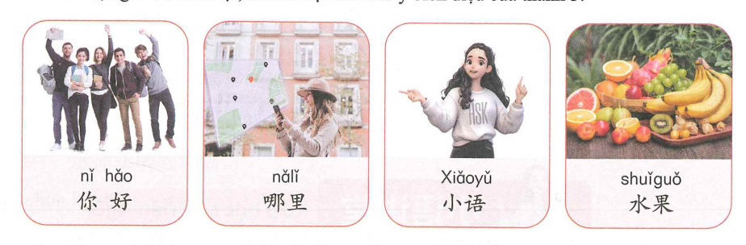
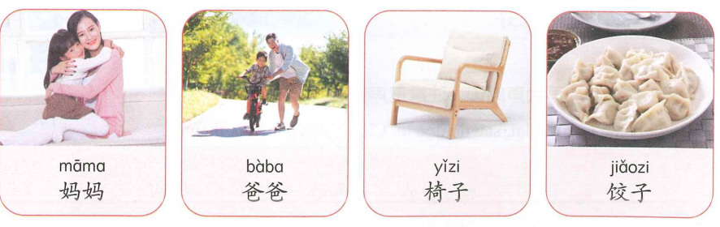
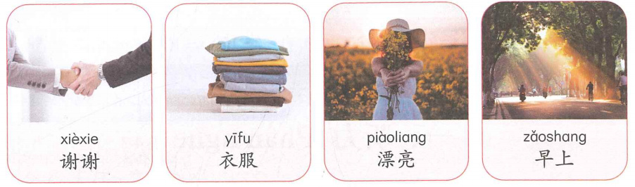

1Ngữ âm
Sự biến đổi thanh điệu khi hai âm tiết thanh 3 đi liền nhau
Khi hai âm tiết mang thanh 3 (ˇ) được đọc liền nhau, âm tiết thứ nhất chuyển thành thanh 2: 214 + 214 → 35 + 214.
🎧 Nghe quy tắc và luyện thanh 3
| Từ/Cụm từ | Cách đọc thực tế |
|---|---|
| 你好 | nǐ + hǎo → ní + hǎo |
| 哪里 | nǎ + lǐ → ná + lǐ |
| 可以 | kě + yǐ → ké + yǐ |
| 小语 | Xiǎo + yǔ → Xiáo + yǔ |
| 很好 | hěn + hǎo → hén + hǎo |
Nghe và nhắc lại
| shuǐguǒ | nǐ hǎo | kěyǐ | nǎlǐ |
| hěn hǎo | suǒyǐ | qǐng nǐ | shǒubiǎo |

Thanh nhẹ
Ngoài bốn thanh điệu cơ bản, một số âm tiết không mang thanh điệu, được đọc nhẹ và ngắn. Thanh nhẹ thường không ghi dấu. Một số từ có thể thay đổi nghĩa nếu đọc thanh nhẹ hoặc không đọc thanh nhẹ.
| Dạng đọc | Nghĩa |
|---|---|
| 东西 dōngxi | đồ vật |
| 东西 dōngxī | phương đông và phương tây |
| 买卖 mǎimai | buôn bán, kinh doanh |
| 买卖 mǎi mài | mua và bán |
| 孙子 sūnzi | cháu nội |
| 孙子 Sūnzǐ | tên người, nhà quân sự Trung Quốc thời cổ đại |
🎧 Nghe các từ có thanh nhẹ

